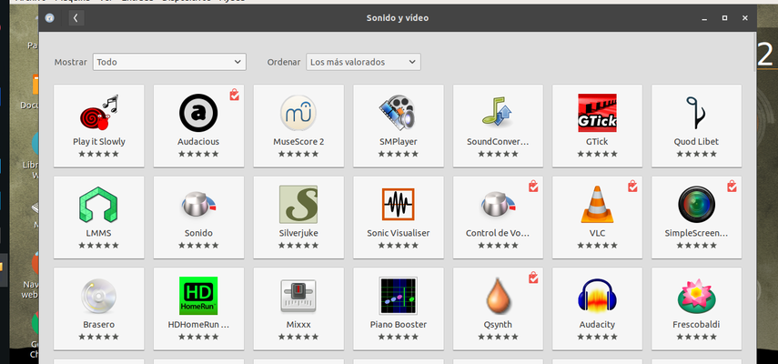
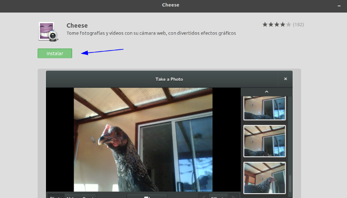

Instalación de software y su código fuente
En éste apartado vamos a aprender a instalar software libre y hablaremos al final un poco sobre el código fuente.
Instalación de Software
Una vez que sabemos qué aplicación queremos usar/probar, vamos a instalarla. Para ello tendremos varios métodos
- Centro de Software
- Synaptic
- Mediante migasfree
- Manualmente mediante un paquete deb. Forma gráfica
- Línea de comandos. Instalación de aplicaciones de un repo o directamente descagando el deb
En la mayoría de los casos, deberemos hacer uso de una cuenta con permisos de administración para poder instalar/desinstalar software. En el caso de Vitalinux por ejemplo, la cuenta de profesor y dga tienen por defecto permisos de administración.
1. Centro de Software
Vitalinux es una distribución basada en la versión ligera de Ubuntu, la cual dispone de su propio '''Centro de Software''' que permite al usuario instalar y desinstalar aplicaciones de una forma muy gráfica y convencional, al estilo que estamos acostumbrados de un Store actual del móvil, pudiendo filtrar la búsqueda de una manera categorizada: '''Educación, Ofimática, Internet''', etc.
Atención: es posible que NO encontremos todo el software disponible (por problemas de indexación)
Para interactuar con '''El Centro de Software''' simplemente debemos lanzarlo pulsando la combinación mágia CONTROL + ESPACIO y tecleando Software. Si no disponemos del lanzador, lo podremos encontrar en el menú o con el nombre de Centro de Software.
Podemos entonces seleccionar la categoría, aplicación e instalar o incluso lanzarla (si ya está instalada)
 
2. Synaptic
Una de las aplicaciones más completa (gráfica) y usada en el mundo Linux para la gestión del software es Synaptic. Aunque su aspecto visual no es tan amigable como el de otras aplicaciones equivalentes que han ido surgiendo con los años, su eficiencia y robustez han hecho que sea una aplicación muy asentada y universalmente utilizada en muchas distribuciones Linux.
Entre sus características cabría destacar:
- Permite actualizar la lista de software disponible en los repositorios configurados en la máquina
- Permite buscar rápidamente, instalar y desinstalar aplicaciones
- Permite solventar problemas con paquetes rotos (paquetes que no se terminaron de instalar correctamente)
Para interactuar con Synaptic simplemente debemos lanzarlo pulsando la combinación "CONTROL + ESPACIO"' y tecleando "Synaptic ..."':
La pantalla de Synaptic está dividida en 4 secciones. Las dos más importantes son la lista que incluye la sección de categorías (1) en el lado izquierdo y la de los paquetes (3) en el lado derecho. Al seleccionar un paquete de la lista se mostrará una descripción del mismo (4).
Para instalar un paquete seleccionaremos una categoría, pulsaremos con el botón derecho del ratón sobre el paquete deseado y seleccionaremos Marcar para instalar o bien haremos doble clic en el nombre del paquete. Marcaremos de esta forma todos los paquetes que deseesemos instalar en el sistema y pulsaremos sobre el botón Aplicar para que comience su instalación. Synaptic descargará él solo los paquetes necesarios desde los repositorios
También es posible emplear el botón Buscar para encontrar los paquetes que deseemos instalar. Al pulsar sobre este botón podremos realizar búsquedas de programas mediante su nombre o descripción. Una vez localizado el programa que deseamos instalar hacemos doble clic sobre él para instalarlo. Si queremos eliminar un programa bastará con que pulsemos con el botón derecho encima de éste y seleccionemos Eliminar o Eliminar por completo.
En todos los casos, los cambios surtirán efecto una vez que hagamos clic sobre el botón de Aplicar.
3. Mediante migasfree
Como ya se ha dicho en varias ocasiones, una caracterísitica que vamos a encontrar en Vitalinux y que le diferencia del resto de distribuciones Linux actuales, es que incorpora un cliente Migasfree gestionado de forma centralizada y personlaziado por cada centro educativo, a demanda y de formma dinámica. En concreto, este cliente Migasfree garantiza que cada vez que arranca Vitalinux EDU DGA y tras iniciar sesión, se establece una comunicación con el servidor Migasfree del programa de Software Libre de la DGA, y a través de dicha comunicación Vitalinux deja en manos de Migasfree la configuración del equipo en cuanto a personalización y software: Migasfree provocará en el equipo Vitalinux todo aquello que se le haya encomendado previamente por el propio centro, y en concreto qué aplicaciones deben instalarse (y si no lo están, lo hará de forma automática), y qué aplicaciones se tienen que desinstalar (si las encuentra instaladas). Además realiza otras acciones (como configurar el escritorio, navegadores, limpieza, gestión de usuarios....).
¿Y cómo sabe qué tiene que hacer en cada equipo, si son muchos centros y cada uno usa un software diferente? A grandes rasgos, Migasfree tiene identificado al equipo Vitalinux en base a un identificador unívoco llamado CID y a un conjunto de Etiquetas Migasfree que se le pueden asignar...en base a dicha configuración se personaliza, entrando en el programa de Asesoramiento del Proyecto Vitalinux.
4. Forma manual
De forma manual, dependerá de como nos faciliten el software:
- O bien es un paquete que debemos "instalar" antes de poder usar. Como lo que hemos visto hasta ahora, pero de forma manual. Serán archivos .deb
- En éste caso po
- Es una aplicación que tiene todo los binarios y librerías ya compilados y empaquetados, de forma que se puede lanzar directamente. En éste caso, solo debemos marcarlos para ejectuar y lanzarlo. Es lo que se conoce comunmente como software portable. El más común actualmente es en formato AppImage
Si optamos por la fórmula manual, debemos ser cuidadosos y saber de dónde estamos descagando el software para garantizar la seguridad e integridad de nuestro equipo y sobre todo, respetar las licencias de uso para respetar la legalidad del uso de la misma
Veamos un ejemplo de cada:
4.1 Paquetes deb
- Buscamos el software a instalar. Encontramos el fichero a descargar. El nombre del archivo (nootka_1.7.3-beta3_amd64.deb) nos está indicando la versión (1.7.3) y en éste caso la arquitectura (64 bits). Deberemos descargar éste si nuestra arquitectura del sistema operativo es 64 bits (lo mas común a día de hoy) o buscar el de 32 (en éste caso no hay posibilidad). También podemos encontrar el final con un all en lugar de amd64, lo que indica que sirve para cualquier arquitectura
Observar que el software tiene versiones para múltiples arquitecturas...como debe ser :-)
- Una vez descargado, podemos instalarlo simplemente haciendo doble click sobre el paquete. Al instalarlo nos puede saltar una advertencia indicando que dicho paquete ya está en un "canal de distribución" (como es el caso), es decir, que se encuentra disponible en los repositorios...por si queremos instalarlo de ésta forma y asegurar que viene firmado y estable a la versión de distribución que tenemos (por ejemplo, las posibles librerías que necesite estarán en la versión esperada).
Es posible también encontrar url's en páginas web que directamente apuntan al paquete deb mediante un protocolo para instalar, siempre que sigamos el link desde un Linux. Lo podremos probar en la siguiente parte.
4.2 Ficheros AppImage
En el caso de ficheros AppImage, procederemos a descargarlo igualmente. En éste ejemplo, el nombre sería nootka-1.7.3-beta3-b3917-x86_64.AppImage, indicando que es para una arquitectura de 64 bits
Ésta forma de distribución, no requiere de ninunga instalación para ejecutarse, pero:
- Es muy cómodo ya que no requiere instalación, dependencias de librerías con versiones que no tenemos
- No requiere permisos privilegiados para poder usarlo (dependiendo de las acciones que quiera realizar). Los paquetes deb requieren permisos de superusuario para ser instalados.
- No se mantedrá actualizado
- Es posible que le cueste arrancar algo más, ya que contiene todas las librerías y programas adicionales que necesite
- Deberemos añadir el lanzador que queramos para poder tenerlo accesible de forma cómoda (menú, escritorio, lanzador de aplicaciones...)
Es importante que demos permisos de ejecución al fichero descargado para poder ejecutarlo. Una vez hecho ésto, podremos lanzarlo con doble-click sobre el archivo descargado
Importante: En vitalinux se ha faclitado su ejecución, de forma que no es necesario dar permisos de ejecución
Hay otras tecnologías de distribución de softare como pueden ser Snap y Flatpak, que se están abriendo camino. Puedes consultar más información aquí por ejemplo sobre snap aquí
5. Línea de comandos
Mediante la línea de comandos, podemos instalar software, desinstalar, comprobar, buscar...usando los repositorios que tenemos configurados. Antes ya hemos visto algo con obs-studio. Veamos un ejemplo mas completo de acciones que puedes hacer
Actualizar la lista de paquetes disponibles en el repositorio
sudo apt-get update
Actualizar todos los paquetes instalados en el equipo
sudo apt-get upgrade
Instalar un paquetes:
sudo apt-get install nombre_del_paquete
Desinstalar paquetes:
sudo apt-get remove nombre-del-paquete
Desinstalar un paquete y sus archivos de configuración asociados:
sudo apt-get remove --purge nombre-del-paquete
Código fuente
Para finalizar éste apartado, debemos destacar un aspecto importante del software libre: es código abierto, y por tanto podemos consultar su código fuente, modificarlo...
Importante: Recordar que OpenSource no siempre es software libre. Podemos tener programas de código abierto (opensource) con licencias restrictivas de uso.
Podemos descargar el código fuente usando el siguiente comando, siempre que tengamos en los repos marcado que queremos tener disponible además del software (deb) el código fuente (deb-src)
apt source nombre_paquete
Pero una forma más interensante para poder consultar el código es ir a las plataformas que se usan para la gestión de proyectos de software. La mayoría usa un sistema de control de versiones llamado git. Como servidores, hay muchos, pero los más usadas son:
- Launchpad. Por ejemplo del paquete Cheese
- Github. Aquí encontramos por ejemplo el código del software comentado antes obs-studio
- Gitlab. Por ejemplo el código de Inkspcape
Está fuera del alcance de éste curso manejar éstas herramientas de control de código. Conocer de algunos proyectos/aplicaciones el código fuente, o por lo menos seguir su desarrollo nos va a permitir involucrarnos mas en dicho programa, estar atento a las novedades, poder reportar incidencias o incluso colaborar en su mejora. Dependiendo de la edad de los alumnos y su compromiso puede ser intereante incluso hacerles participes a los mismos. Por ejemplo...podríamos ayudar a traducir un software al castellano como han hecho algunos COFO's en sus centros...estaríamos fomentando las habilidades lingüisticas y tecnológicas.
El código fuente de los programas que se escriben para Vitalinux, lo podemos encontrar en su propio servidor de gitlab
Para terminar, puedes visualizar un vídeo sobre la gestión del Software en Vitalinux, donde se habla del uso de las diferentes herramientas descritas
Fuentes:
- https://itsfoss.com/remove-install-software-ubuntu/
- https://ubunlog.com/

Software Libre: Vitalinux por Arturo Martín Romero y Ignacio Sancho Morte bajo licencia Creative Commons Reconocimiento-NoComercial-CompartirIgual 4.0 Internacional License.